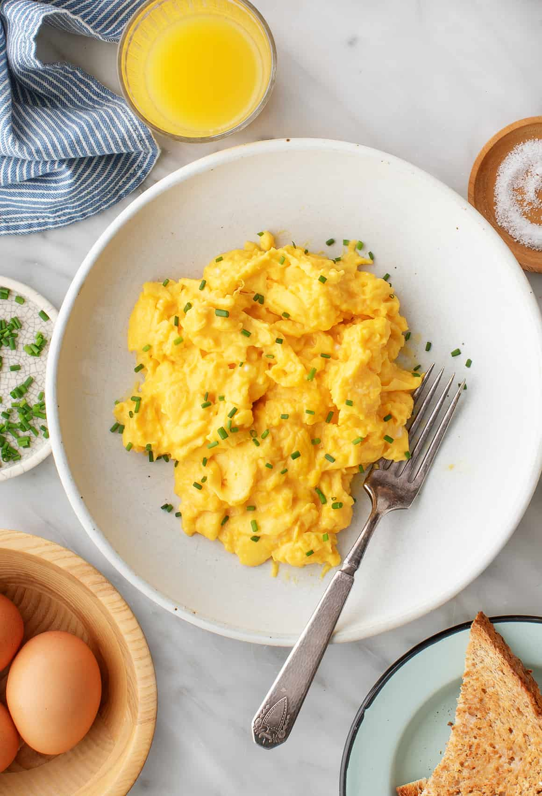

Scrambled Eggs
Home

Description
Scrambled eggs are a quick and simple breakfast dish made by gently cooking beaten eggs until soft, fluffy, and creamy.
They are one of the easiest ways to prepare eggs and can be customized with butter, milk, or seasonings.
Ingredients
- 2-3 eggs
- Salt
- Butter or oil
- Optional: Milk or Cream
- Optional: black pepper
Steps
- Crack the eggs into a bowl and whisk them until the yolks and whites are fully combined.
- Add a pinch of salt and optional milk or cream, then whisk again until smooth.
- Heat butter in a pan over low to medium heat.
- Pour in the eggs and let them sit for a few seconds
- Gently stir the eggs with a spatula, pushing them slowly as they begin to set.
- Continue stirring occasionally until the eggs are soft, fluffy, and slightly creamy.
- Remove from heat immediately to avoid overcooking.
- Serve warm, optionally topped with black pepper.